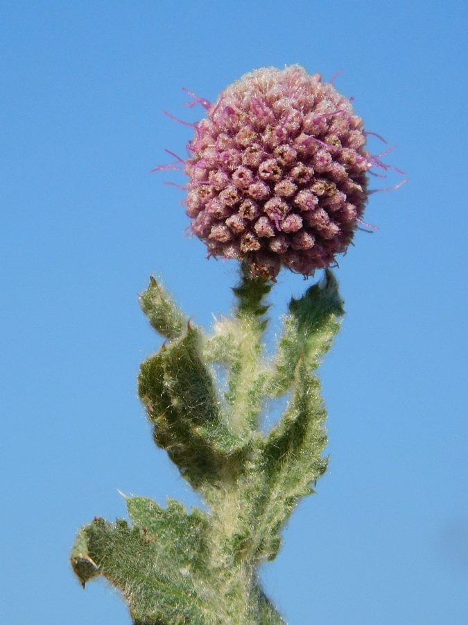

गोरखमुंडीAfrican Globe Thistle
Sphaeranthus senegalensis · Asteraceae · FLR-0332

- Scientific name वैज्ञानिक नाम
- Sphaeranthus senegalensis DC.
- Family कुल
- Asteraceae
- Hindi हिंदी
- गोरखमुंडी
- Local names स्थानीय नाम
- african globe thistle, gorakh mundi, mundi, sphaeranthus
- Status here यहाँ की स्थिति
- naturalized
- Movement आवागमन
- Resident, here all year
- Known from कहाँ दर्ज
- Others have published records from the wider Awadh–Purvanchal plain, none yet from Basti–Ayodhya अवध–पूर्वांचल से दूसरों के प्रकाशित अभिलेख, बस्ती–अयोध्या से अभी नहीं
- IUCN IUCN
- not evaluated
- Review समीक्षा
- not yet reviewed
When to look कब देखें
Present all year. साल भर मौजूद।
Uses and possibilities उपयोग और संभावनाएँ
“Traditional medicine” means a documented traditional use, not a claim that it works. Nothing on this page is medical advice.
Drawn from the documented uses in the profile below, where each is labelled traditional, current or a research lead. All uses →
Tell it apart from इनसे अलग पहचानें
गोरखमुंडी / African Globe Thistle
Sphaeranthus senegalensis DC. — Asteraceae
गोरखमुंडी — धान के खेतों की कटाई के बाद गीली मिट्टी और सूखते पोखरों के किनारों पर उगने वाला एक बहुत ही खुशबूदार, औषधीय छोटा पौधा। इसके तनों पर हरी पत्तियों जैसी किनारियां (पंख) बनी होती हैं। जाड़ों और बसंत में इस पर गोल, गेंद जैसे बैंगनी-गुलाबी फूलों के सिर खिलते हैं, जिनमें से एक विशेष तीखी सुगंध आती है।
Quick Identification त्वरित पहचान
| Feature | Description |
|---|---|
| Habit | Strongly aromatic annual herb 20–50 cm tall with spreading winged branches (Duthie 1903) |
| Stems | Ascending or erect, winged with the decurrent bases of the leaves (Hooker 1881) |
| Leaves | Oblong-spathulate, 2–7 cm long, toothed, glandular-hairy, decurrent at base (Duthie 1903) |
| Flowers | Compound globose heads 8–15 mm across, consisting of numerous tiny purple florets (Hooker 1881) |
| Odour | Pungent, camphoraceous, musky aroma emitted from all vegetative parts when crushed |
| Achenes | Oblong, small, smooth or sparsely glandular, without a pappus (Hooker 1881) |
Field tip: Look in drying paddy fields and canal edges from December to March for low, musky-smelling herbs with distinctly winged green stems and compact purple globular flower balls.
हिंदी — कैसे पहचानें: पत्तियों के आधार से तने पर बनी हरी झिल्लीनुमा किनारियां, मसलने पर कपूर जैसी तीखी महक, और गेंद जैसे गोल जामुनी-गुलाबी फूलों के गुच्छे।
Morphology शारीरिक संरचना
Biometrics (Duthie 1903; Hooker 1881):
| Measurement | Range |
|---|---|
| Plant height | 20–50 cm (Duthie 1903) |
| Stem wing width | 1.5–3.5 mm (Hooker 1881) |
| Leaf length | 2–7 cm (Duthie 1903) |
| Leaf width | 1.0–2.5 cm (Duthie 1903) |
| Compound head diameter | 8–15 mm (Hooker 1881) |
| Achene length | 0.8–1.2 mm (Hooker 1881) |
Stems and indumentum: Stems branched from the base, ascending, cylindrical, clothed with glandular and viscid hairs. The leaf bases continue down the stem as continuous green longitudinal wings.
Leaves: Alternate, sessile, oblong-lanceolate to obovate-spathulate, obtuse or apiculate, irregularly dentate or serrate with mucronate teeth, both surfaces covered with sticky aromatic glands.
Inflorescence and florets: Capitula aggregated into dense, solitary, terminal globose or ovoid compound heads. Involucral bracts linear-lanceolate, ciliate. Outer florets female, fertile; central florets bisexual, tubular, corolla 4–5 toothed, reddish-purple. Achenes tiny, subcompressed, glabrous or minutely glandular; pappus absent.
हिंदी: तना नीचे से शाखित होता है और उस पर चिपचिपे रोएं होते हैं। पत्तियाँ बिना डंठल की और किनारे पर कटी-फटी होती हैं। गोल गेंद जैसी बाली में अनगिनत छोटे-छोटे जामुनी फूल भरे होते हैं।
Behaviour & Ecology व्यवहार एवं पारिस्थितिकी
Sphaeranthus senegalensis is a specialist pioneer of receding monsoonal waters and drying hydromorphic alluvium. It germinates in damp mud as post-monsoon waters drain from rice paddies and seasonal flood hollows.
The dense glandular pubescence secretes volatile terpenes that deter generalist grazing herbivores, allowing the plant to carpet fallow fields without heavy livestock destruction. Flowering occurs during the cool, dry winter months and continues into hot early summer. The showy purple flower balls attract small solitary bees, hoverflies, and butterflies. The lightweight, pappus-free achenes disperse in seasonal winds and surface rainwater flows.
हिंदी: यह पौधा बाढ़ का पानी उतरने के बाद गीली चिकनी मिट्टी पर उगता है। इसकी तीखी गंध के कारण मवेशी इसे नहीं चरते। इसके फूलों पर मधुमक्खियाँ और छोटी तितलियाँ मँडराती हैं।
Life Cycle / Phenology जीवन चक्र एवं ऋतुचक्र
| Period | Phenological Event |
|---|---|
| October–November | Seeds germinate in saturated mud as floodwaters recede from paddy fields |
| December–January | Vegetative rosettes expand, developing winged glandular stems and aromatic foliage |
| February–April | Profuse flowering produces dense globose purple compound heads |
| May–June | Heads turn brown and dry; achenes shed into soil cracks before plants wither |
Seeds possess heat tolerance that enables them to endure summer desiccation in cracked field clays until monsoon inundation passes.
हिंदी: कार्तिक में धान कटाई के बाद यह उगना शुरू होता है। माघ-फागुन में इस पर सुंदर जामुनी फूल खिलते हैं और वैशाख की गर्मी में बीज झड़ने के बाद पौधा सूख जाता है।
Associated Species / Interactions संबद्ध प्रजातियाँ एवं पारस्परिक क्रियाएं
- Pollinators: Small halictid bees, Asian Honey Bee, and hoverflies visit the tubular florets for nectar.
- Predators: Ladybird beetles and predatory mirid bugs forage across the glandular foliage.
- Fallow Companions: Grows in harvested paddy mud alongside Forked Fimbry and Nutgrass.
हिंदी: इसके फूलों पर देसी मधुमक्खियाँ और परागण करने वाले कीट आते हैं और धान की परती में यह अन्य खरपतवारों के साथ पाई जाती है।
Pests and Diseases कीट एवं रोग
- Powdery mildew occasionally forms a dusty white coating on older leaves in late spring.
- Root rot develops if soil remains waterlogged without atmospheric aeration.
- Leaf miners produce narrow winding silvery trails in mature foliage.
हिंदी: बसंत ऋतु में पत्तियों पर कभी-कभी सफेद फफूंद आ जाती है और पत्तियों के अंदर कीड़े सुरंग बना देते हैं।
Agricultural / Human Relevance कृषि एवं मानवीय उपयोगिता
Traditional Medicinal and Agrarian Value:
- Traditional medicine. Highly celebrated in classical Ayurveda and Unani systems as a sovereign alterative, blood purifier, and nervine tonic ("gorakh mundi"), used traditionally for skin afflictions, glandular swellings, and digestive debility (Kirtikar & Basu 1935). This is a record of traditional use, not medical advice.
- Soil cover. Rapidly carpets bare rabi fallow fields, reducing evaporative loss of residual moisture from deep alluvial clays.
- Natural insecticide. Crushed dried herb has documented traditional applications as a folk insect repellent for stored grains.
Today. It is gathered from harvested paddy fields by rural collectors for sale to regional Ayurvedic pharmacies across northern India.
हिंदी: आयुर्वेद में गोरखमुंडी को एक प्रसिद्ध रसायन और रक्तशोधक औषधि माना गया है। गाँव में इसके सूखे पौधे को कीड़े भगाने के लिए अनाज में रखा जाता था, और आज भी वैद्य इसे एकत्रित करते हैं।
Expected Locally स्थानीय संभावना एवं उपस्थिति
Not a field record. Written from published accounts for eastern Uttar Pradesh. No confirmed local sighting yet — if you have seen it, that is what the atlas needs.
अभी तक स्थानीय पुष्टि नहीं। यह विवरण प्रकाशित स्रोतों से है, किसी अवलोकन से नहीं।
Expected in eastern Uttar Pradesh across harvested rice paddies, drying jheel margins, canal-side silt flats, and temporary mud hollows across Basti, Siddharthnagar, and Ayodhya. GBIF holds published records from the wider Awadh–Purvanchal plain, none yet from Basti–Ayodhya. A first local record would be a dated photograph of the compound heads, winged stems, or foliage, submitted with locality details through the project's About page.
Distribution भौगोलिक वितरण
Global range: Native across tropical Africa, Egypt, the Arabian Peninsula, South Asia, and into Southeast Asia.
In India: Found across the Indo-Gangetic plain, West Bengal, Bihar, Uttar Pradesh, and Central India in drying marshy ground (Hooker 1881).
In Uttar Pradesh: Common in low-lying moist ground and harvested rice fields throughout the plains (Duthie 1903).
In Basti district / eastern UP: Expected on drying paddy alluvium, pond edges, and roadside ditches.
हिंदी: भारत के गंगा के मैदानी राज्यों, मिस्र और उष्णकटिबंधीय अफ्रीका के नम खेतों में यह पौधा पाया जाता है।
Research Questions शोध प्रश्न
- How much wild gorakh mundi is collected commercially from harvested paddy fields in Basti? / बस्ती में धान कटाई के बाद खेतों से कितनी गोरखमुंडी व्यापारिक उपयोग के लिए एकत्र की जाती है?
- Which native bee species are the primary pollinators of its compact globular flower heads? / इसके गोल गेंद जैसे फूलों पर परागण करने वाली मुख्य स्थानीय मधुमक्खियाँ कौन-सी हैं?
- What is the density of viable Sphaeranthus seeds in post-monsoon wetland clay soils? — Germinate soil cores collected from five seasonal drainage depressions.
- How do winged stem margins contribute to heat dissipation in exposed drying mudflats? — Compare surface temperatures of winged versus non-winged stems.
- Does the volatile oil content vary significantly between winter and late-spring flowering stands? / क्या जाड़े और बसंत के मौसम में इसके पौधों में गंध और तेल की मात्रा में अंतर आता है?
Similar Species समान प्रजातियाँ
| Species | How to tell apart | हिंदी |
|---|---|---|
| Indian Globe Thistle (Sphaeranthus indicus) | Leaves spinous-serrate; compound heads larger, more purplish; closely allied | पत्तियाँ अधिक कांटेदार, सिर थोड़े बड़े |
| Congress Grass (Parthenium hysterophorus) | Stems deeply grooved, unwinged; flowers white in small open corymbs | गाजर घास, तने पर पंख नहीं, छोटे सफेद फूल |
| Forked Fimbry (Fimbristylis dichotoma) | Grass-like sedge; stem unwinged; spikelets in brown umbels; no aroma | मोथा जैसी दलदली घास, तने पर पंख नहीं |
Field rule: Strongly aromatic annual herb with distinctly winged green stems and compact purple globular compound flower heads growing on drying alluvium identifies Sphaeranthus senegalensis.
Taxonomy & Classification वर्गिकी एवं वर्गीकरण
Original description. Described by Augustin Pyramus de Candolle in 1836 in Prodromus Systematis Naturalis Regni Vegetabilis, vol. 5, p. 370. The specific epithet senegalensis refers to the collection of original materials from Senegal in western Africa.
Subspecies. Monotypic — recognized as Sphaeranthus senegalensis without formal infraspecific divisions across its African and Asian range.
Family and order placement. Belongs to the composite family Asteraceae, subfamily Asteroideae, tribe Inuleae, in the order Asterales.
Phylogenetic notes. Sphaeranthus is characterized by unique secondary heads (capitula aggregated into a dense spherical glomerule) and decurrent winged stems.
IUCN status rationale. Not evaluated in the master expansion list; it is widespread, common, and under no conservation threat across African and Asian wetlands.
हिंदी: इसका वैज्ञानिक नाम 1836 में डी कैंडोल ने दिया था। इसका जाति नाम 'सेनेगलेंसिस' पश्चिमी अफ्रीका के सेनेगल देश के नमूनों पर आधारित होने के कारण पड़ा।
Photo Gallery छायाचित्र दीर्घा
No photos yet — add field photos to media/species/african_globe_thistle/ and run node scripts/sync_photos.js.
Photos needed आवश्यक फोटो
- [ ] Low spreading plant growing in a dry paddy field (सूखे धान के खेत में उगा पूरा पौधा)
- [ ] Detail of winged stem with decurrent glandular leaves (पंखदार तना और चिपचिपी पत्तियाँ)
- [ ] Compact purple globular flower ball in winter (सर्दियों में खिली गेंद जैसी जामुनी बाली)
References संदर्भ सूची
- Candolle, A.P. de (1836). Prodromus Systematis Naturalis Regni Vegetabilis, vol. 5, p. 370. Paris: Treuttel et Würtz.
- Duthie, J.F. (1903). Flora of the Upper Gangetic Plain and of the Adjacent Siwalik and Sub-Himalayan Tracts, vol. 1, p. 459. Government Printing, Calcutta.
- Hooker, J.D. (1881). The Flora of British India, vol. 3, pp. 275–276. L. Reeve & Co., London.
- Kirtikar, K.R. & Basu, B.D. (1935). Indian Medicinal Plants, 2nd ed., vol. 2, pp. 1341–1343. Lalit Mohan Basu, Allahabad.
- Robyns, W. (1924). An account of the genus Sphaeranthus. Bulletin of Miscellaneous Information, Royal Botanic Gardens, Kew, 1924(5), pp. 177–199.
- GBIF Occurrence Data — Sphaeranthus senegalensis DC., India (2025).
Source file: species/flora/weeds/african_globe_thistle.md